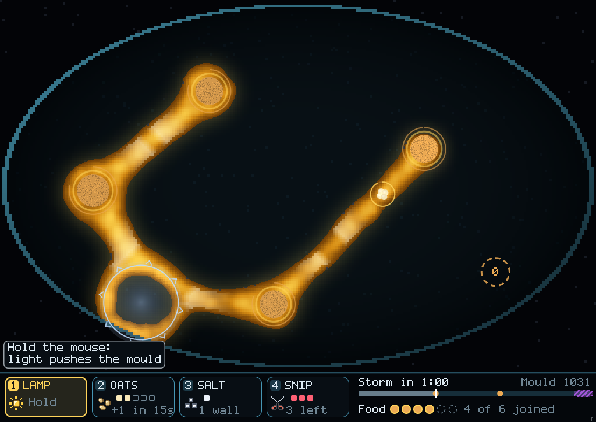
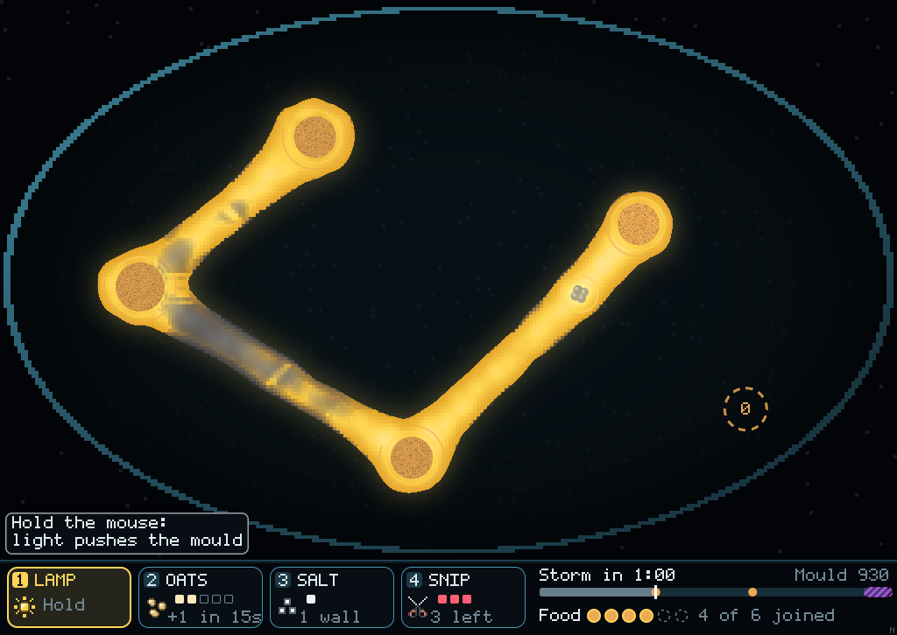
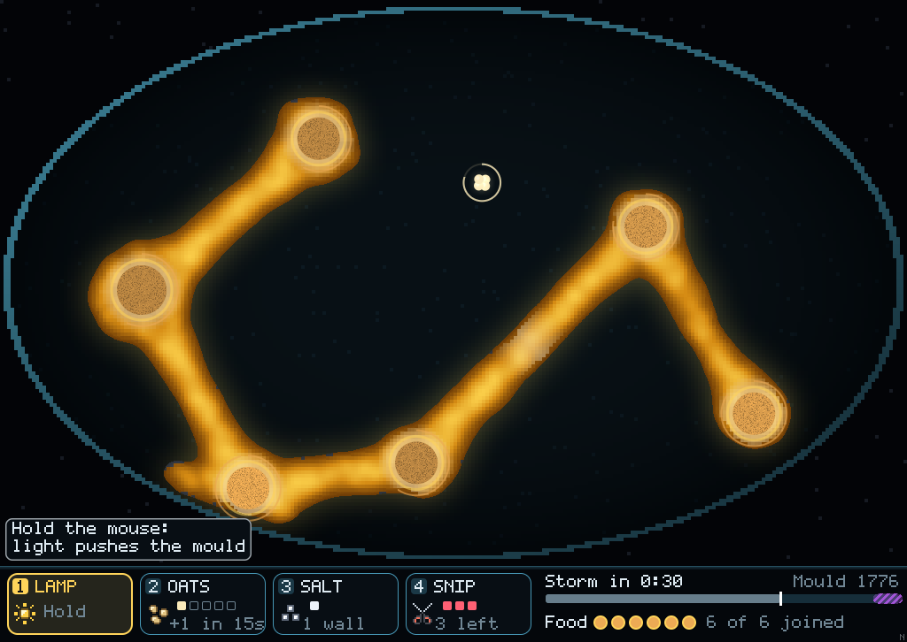
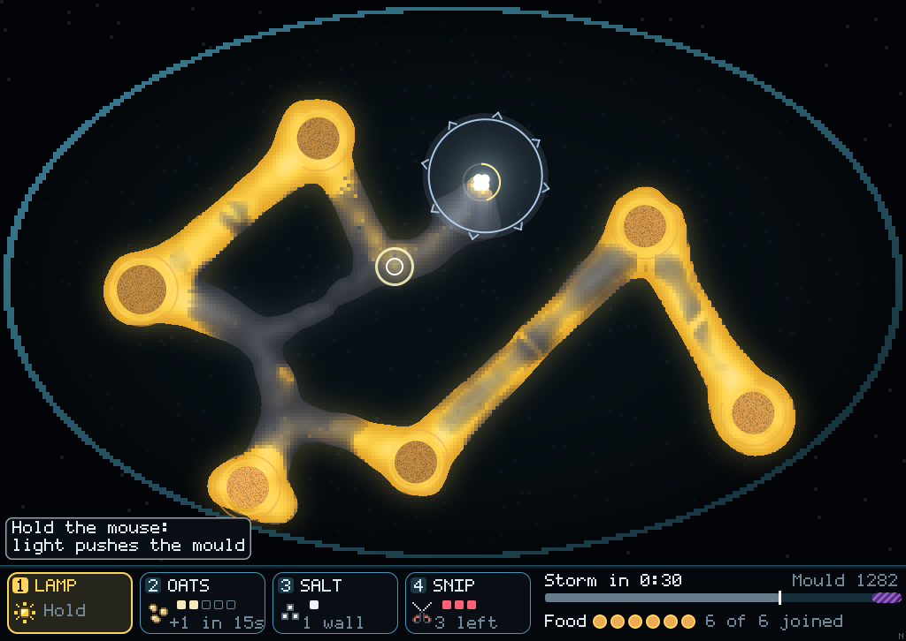
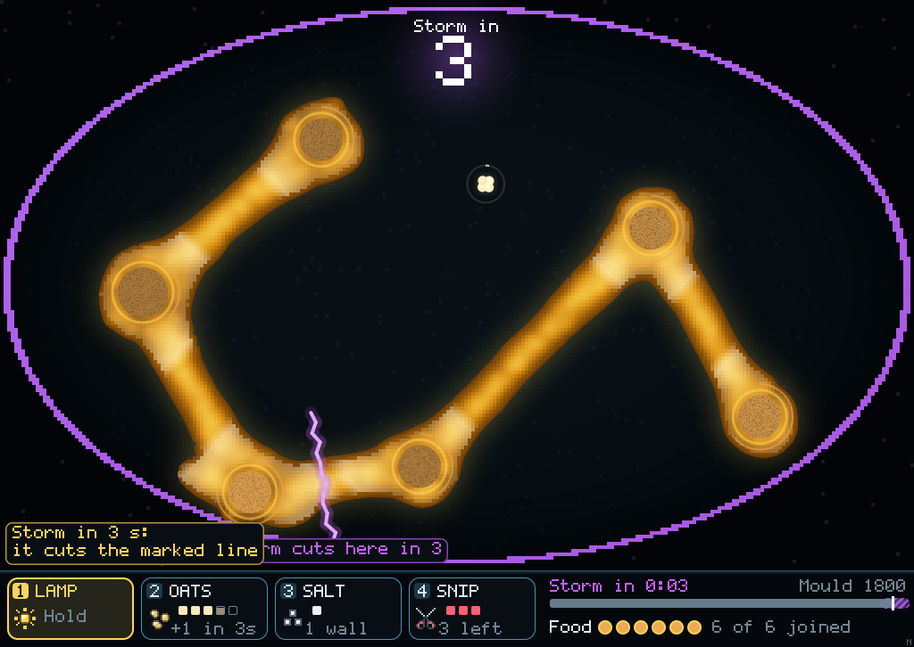
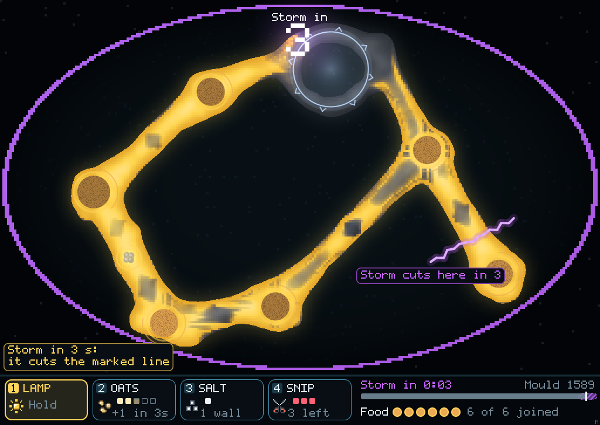
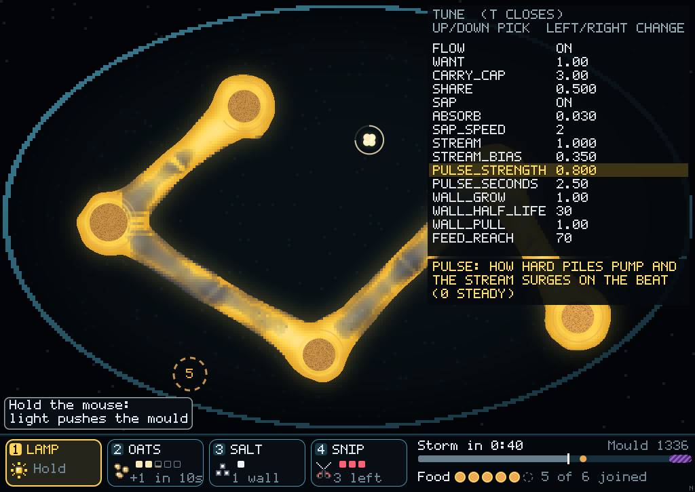

You said the food looked fake: yellow out to a set distance, then grey. Now it is real. Food leaves each pile, is carried by the mould, streams along the tubes on a beat and runs low the further it goes. All three parts are behind switches, with every number on a panel you can change while playing.
Play it and tune it
It's off by default for now, because the three dishes were scored against the old rule. Press T in the game, set FLOW to ON, and turn the numbers. Your settings save to mould-tune.txt and come back the next time you play. Tell me which settings feel right, and I'll make them the default and re-check the dishes against them.
The same hand, 0:40 to 0:48: old rule on the left, flow on the right
Old rule · yellow out to 70 cells of tube, grey past it; the white bands were drawn on, not simulatedFlow · yellow is food the mould actually holds; it is brightest at the piles and thins down the tube
Free dish, seed 1, the scripted plan. Old rule: 6 of 6 food joined, 2 stars. Flow: 6 of 6 joined, 1 star.
Three moments, side by side
0:30, before the late piles arrive.

Old rule, 0:30

Flow, 0:30
1:00. Under flow, the long arms out to the new piles go grey in the middle. The mould there is real but has had little food reach it yet.

Old rule, 1:00 · mould 1,776

Flow, 1:00 · mould 1,282
1:27, the storm warning.

Old rule, 1:27

Flow, 1:27
What is simulated now
Food carried by the mould. Each walker holds a load, pays its upkeep from it, divides from it and starves when it is empty. Neighbours even out their loads. There is no distance limit any more. Panel rows: want, carry_cap, share.
Food in the tube, a stream and a pulse. Piles pump food into the tube on a beat. The tube carries it outward and back, faster in thick tube. The mould draws only what it is short of, so food is left over to reach further out. This beat is the real organism's back-and-forth streaming, sped up. Panel rows: sap, absorb, sap_speed, stream, stream_bias, pulse_strength, pulse_seconds.
Tubes that remember. Food passing through a cell builds up a wall that fades slowly. A wall widens the tube and draws the mould back to old routes. Panel rows: wall_grow, wall_half_life, wall_pull.
The drawn pulse is now off everywhere, including when flow is off. The old-rule clip above was recorded before that change, so it still shows the bands.
The tuning panel (T)

Up/Down picks a row, Left/Right changes it (hold Shift for ×5), Enter flips a switch, Backspace resets. The yellow line explains the row you're on.
What it changes, measured
Free dish, seeds 1–4
Old rule
Flow
Plan: food joined
6 6 6 6
6 6 6 6
Plan: stars
2 2 2 2
1 1 2 1
Plan: storm cost a pile
2 of 4
4 of 4
Plan: most mould at once
1,857–2,199
1,566–1,664
Do nothing / random: stars
0 on all
0 on all
Frame time, average
3.3 ms
5.0 ms
The storm bites harder. A piece the storm cuts off now really starves, because no food can cross the gap. It cost a pile on every run, so the plan lost its toughness star.
The middle of long tubes stays lean. Walkers far from food average 0.08 of a full load. That's about 8 times more than with the stream switched off (0.010), but still thin. The stream and pulse rows on the panel are the ones to try first.
The mould is smaller, about a fifth fewer walkers at its peak.
It costs 1.7 ms more a frame, almost all of it in the simulation. That's well within budget.
Try it
git fetch origin claude/project-thread-cek3ly && git checkout claude/project-thread-cek3ly cargo run --release --bin mould then press T and set FLOW to ON